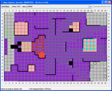

The outstanding LoS bug in forest is not severe and should not keep anyone from using the current version. The bug appears only with diagonally adjacent squares near walls, as in this situation, where A10 and C12 should have LoS, too:

Map Explorer is a freely available tool to explore Line-of-Sight (LOS) on maps for the D&D Miniatures Skirmish game.
| 2006-09-19 | Here is the Underground Grotto map from the Gargantuan Black Dragon. Thanks to Jai for contributing this. |
| 2006-08-22 | MapExplorer 20060822 released. Includes DragonDown Grotto maps. LoS in forest should work now. |
| 2006-06-22 | I'm stuck up in too much work, and now a well-deserved vacation, so
there won't be any updates before August. The outstanding LoS bug in forest is not severe and should not keep anyone from using the current version. The bug appears only with diagonally adjacent squares near walls, as in this situation, where A10 and C12 should have LoS, too:
|
| 2006-05-02 | Guy has posted a new forest LoS rule on his clarifications page. As expected, this is different from the current implementation in Map Explorer. I'll fix it as soon as possible. |
| 2006-04-25 | MapExplorer 20060425 released. This release includes the maps from Fields of Ruin. Support for forest is experimental - the LoS rules are probably not quite correct. |
|  |  |
 |
| Version 20051209 on Windows |
Version 20051201 on Linux |
Version 20051224 on Mac OS-X |
You need a Java 5 Runtime Environment to run Map Explorer. One way to check this is to enter
java -version
on the command line. It should print something like this:
java version "1.5.0_04"
Java(TM) 2 Runtime Environment, Standard Edition (build 1.5.0_04-b05)
Java HotSpot(TM) Client VM (build 1.5.0_04-b05, mixed mode, sharing)
The version number in the first line of the output must at least be 1.5.xxx. If it is 1.3.xxx or 1.4.xxx you need a more recent Java version.
Download the current version of Map Explorer: MapExplorer-20060822. (Version history, source)
Unzip the archive. It will create a Directory MapExplorer
containing the program and the maps.
On Windows Systems, you can start Map Explorer by double-clicking
MapExplorer.bat.
On UNIX or Linux, user the mapexplorer shell script.
Possible improvements and future extensions: TO-DO list.
If you'd like to make your own maps, here's a definition of the map file format.
{kind=link}